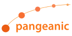

Infraestructura para tu Espacio de Datos
Proporcionamos infraestructura y componentes para la creación de espacios de datos alineados con las propuestas a nivel europeo (IDSA, Gaia-X).
Una incubadora de espacios de datos y servicios de IA a nivel nacional utilizando infraestructuras federadas en la nube.
Investigación e innovación del Ontology Engineering Group de la Universidad Politécnica de Madrid.

Federados por diseño.
Soberanos por defecto.
Construimos un ecosistema con
Ayudamos a alinear la Estrategia de Datos Europea con empresas emergentes y pymes basadas en datos facilitando el desarrollo de soluciones innovadoras confiables y seguras basadas en datos industriales y personales.
Cada entorno aplica una base técnica compartida a las necesidades, estándares y actores de un sector específico.
INESData combina las bases necesarias para compartir datos con servicios que ayudan a las organizaciones a comprenderlos y utilizarlos.
Consultar recursos del proyecto →Proporcionamos infraestructura y componentes para la creación de espacios de datos alineados con las propuestas a nivel europeo (IDSA, Gaia-X).
Convertimos los datos en conocimiento mediante servicios multimodales de IA: Procesamiento de Lenguaje, Grafos de Conocimiento y análisis multimedia.
Habilitamos espacios de datos para los sectores lingüístico, jurídico y contratación pública, movilidad y medios de comunicación.
Descubrir el mapeador de grafos →Una iniciativa de investigación público–privada

